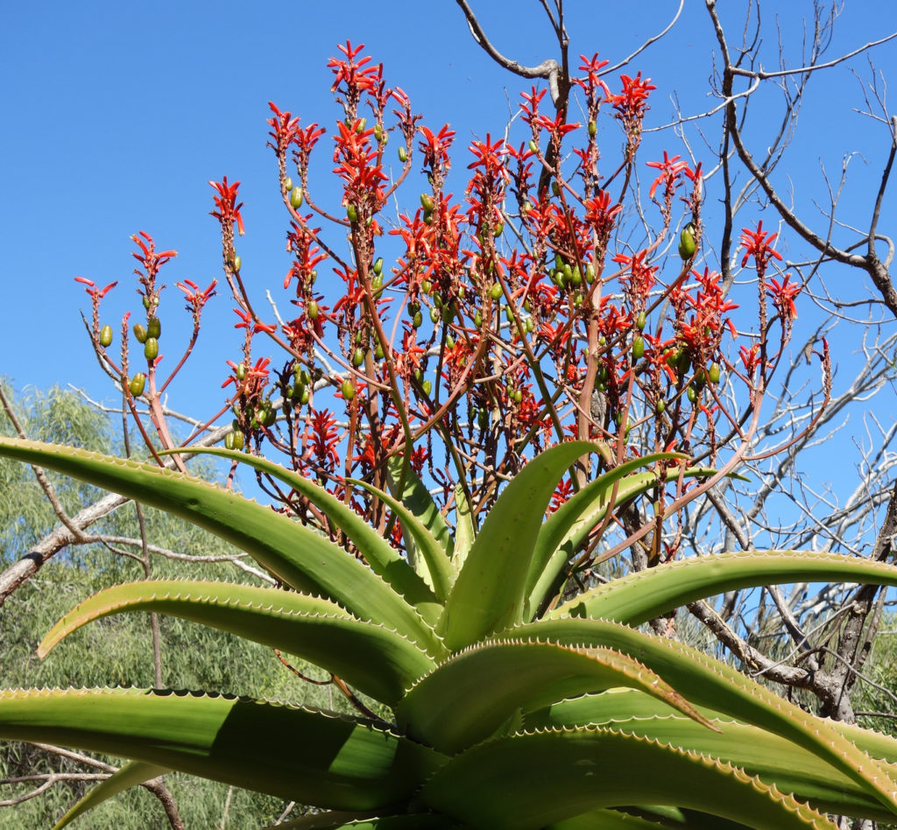
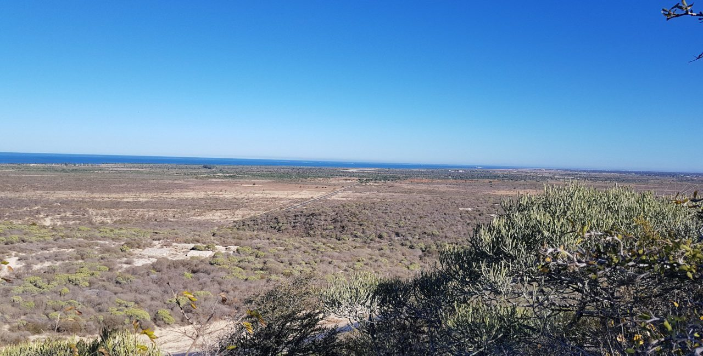

Situé à 12 km au sud-est de la ville de Tuléar, l’Arboretum d’Antsokay vous surprendra par la richesse de sa faune et de sa flore endémiques ! Implanté sur des parcelles de terrains sablonneux d’une superficie de 40 ha, le parc botanique d’Antsokay est entouré de vives haies végétales. La création de l’Arboretum d’Antsokay est issue d’une initiative pour préserver les plantes endémiques de la région sud de Madagascar

Un séjour éco-touristique
Arboretum d’Antsokay, un lieu 100 % vert
L’arboretum d’Antsokay a pour but de préserver les plantes les plus menacées de la région sud de Madagascar. C’est l’excursion idéale à planifier si vous souhaitez découvrir cette région sous un angle plus écologique. Il sert de pépinière pour la reproduction des plantes que ce soit par graine, par bouture ou par transplantation.
L’Arboretum travaille aussi à la préservation des plantes de l’île des déforestations, des pillages et des feux de brousse. Pour cela, le parc botanique maintient et accroît sa collection de plantes conservées tout en entreprenant des programmes de conservation et de recherches botaniques. Pendant vos vacances, venez découvrir l’ensemble des missions réalisées par l’arboretum Antsokay contribuant à la conservation de la flore endémique de Madagascar. C’est le séjour idéal, en famile pour sensibiliser petits et grands à la préservation de la nature dans le cadre d’une démarche touristique responsable.

La flore de l'Arboretum d'Antsokay
d'Antsokay
Une fois sur place, vous pourrez découvrir des espèces typiques de la flore malgache et notamment du « bush » du sud de Madagascar. Vous y découvrirez plus de 1000 espèces de plantes. Accompagné d’un guide, il vous expliquera au fur et à mesure de la visite les bienfaits et les vertus des plantes rencontrées. Enfin, le musée de l’arboretum vous accueille également pour vous présenter sa collection de fossiles, minéraux, insectes et objets ayant appartenus des différentes ethnies malgaches.
Une faune riche dans un écrin préservé
L’arboretum abrite également un grand nombre de mammifères et de reptiles. Lézards et caméléons se cachent entre les pierres et dans les branches des arbres, soyez vifs afin de pouvoir les apercevoir dans l’un des recoins de l’Arboretum ! Si vous avez l’oeil, vous pourrez peut-être observer des microcèbes qui sont les lémuriens les plus petits du monde ! Une visite nocturne est également possible et vous permettra d’apercevoir davantage d’espèces. Les amateurs d’ornithologie seront également ravis puisque 34 espèces d’oiseaux sont recensées au sein de l’arboretum d’Antsokay. C’est un lieu absolument incontournable pour tous les amoureux de la nature !